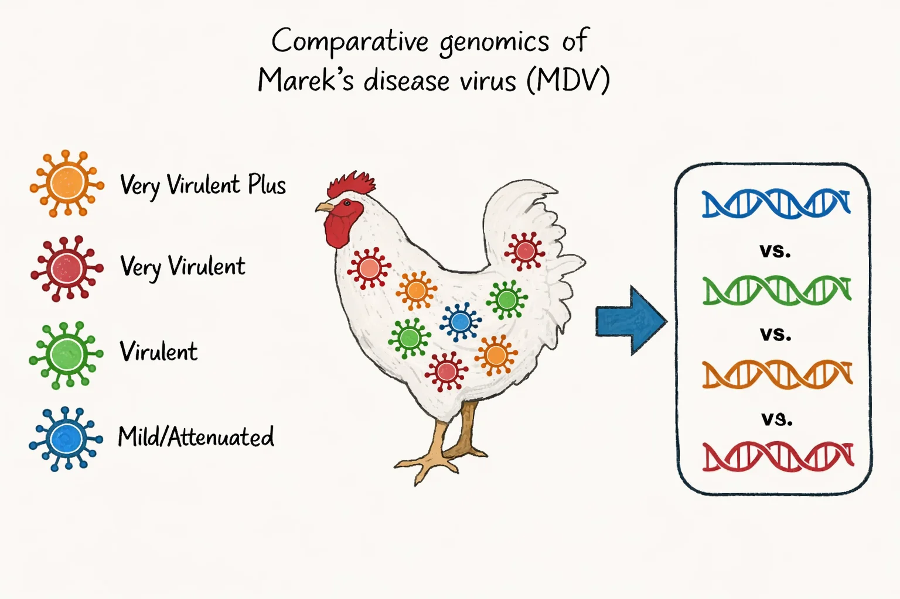
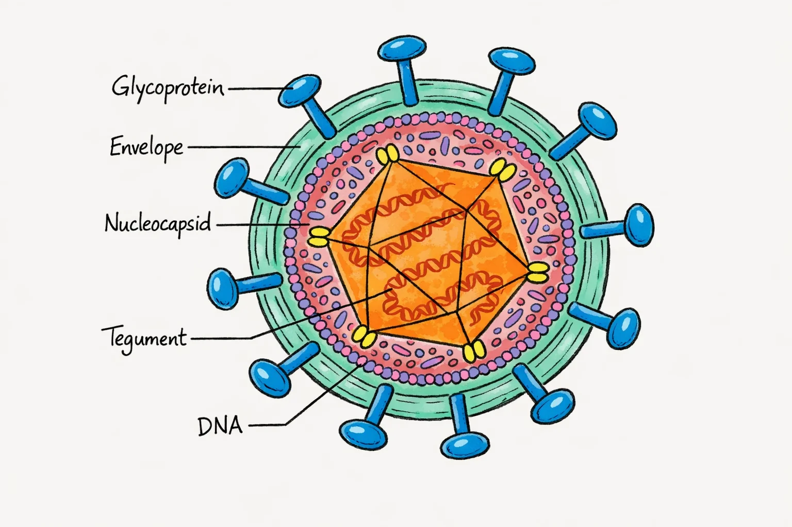

Method: Comparative genomics
DNA sequencing technologies now allow us to directly compare genetic information across individuals of the same species. In doing so, we can start to associate an organism's genetic makeup (i.e., genotype) with its observable biological traits (i.e., phenotype). While powerful, comparative genomic approaches still suffer from a number of limitations, including:
- Performing comparisons based on an incomplete (e.g., unresolved genomic termini/repeats) or narrow (e.g., coding regions) picture of the genome.
- Performing comparisons based on specific types of genomic variation (e.g., single-nucleotide polymorphisms) while excluding others (e.g., INDELs, large structural variants, etc.).
In my research, I seek to address these limitations by either adapting existing methodologies (when possible), or by developing novel computational and/or molecular tools. My overall goal is to help close the "missing heritability" gap, and to expand the practical/actionable output of comparative genomic studies.
Intrasample diversity
The sequence of nucleotides that we often refer to as an organism's "genome" is seldom derived from a single DNA molecule. Instead, this sequence is meant to represent a collective of hundreds of thousands of DNA molecules present in a biological sample, each belonging to an individual cell or microbial particle (e.g., virion, bacterium). In recent years, it has become clear that biological systems are not as genetically uniform as previously thought, and that failing to account for this diversity when representing an organism's genotype can severely reduce the power and accuracy of comparative genomic approaches. Read more about how I tackled this issue in my recent work.
Tandem Repeats
Recent advances in DNA sequencing technologies have finally made it possible to explore genomic regions containing long stretches of repetitive DNA, otherwise known as tandem repeats. While most human tandem repeats consist of a single motif (e.g., CAT) repeated multiple times (e.g., CATCATCAT), my recent work on herpesvirus tandem repeats has revealed far more complex repeat architectures, which are often highly variable even within a viral sample. Read more about these amazingly complex regions and the challenges involved in their analysis.
Model: Herpesviruses
Like humans, herpesviruses such as herpes simplex type 1 (HSV-1) or Marek's disease virus (MDV) possess a double-stranded DNA genome. However, herpesvirus genomes are orders of magnitude smaller than human genomes, making them far cheaper to sequence and requiring significantly less computational resources to analyze. In my research, I aim to highlight herpesviruses as practical and powerful models for studying genomic variation in organisms with double-stranded DNA genomes. Read more about herpesvirus genomes, their inherent challenges, and the methods used to study them in my recent review.